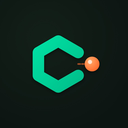

ChemDict Lab
아두이노 센서로 하는 과학 실험 · 무료 · 아이패드 · 맥 · 웹
🔬 어떤 앱인가요
- 아두이노 보드와 값싼 센서(온도·pH·압력·CO₂·빛·질량 등 140여 종)로 과학 실험 데이터를 바로 기록하고 그래프로 해석합니다.
- 2022 개정 교육과정 중·고등학교 교과서 5종의 센서 탐구 활동과 연결된 실험 148개가 들어 있습니다. 실험을 고르면 센서·연결 그림·실험 순서·시약 안내·해석 도구가 함께 나옵니다.
- 교과서 쪽수·활동 이름은 수업 준비를 돕는 참고 정보입니다. 각 출판사와 관계없는 독립 앱이며, 교과서의 본문·그림·표는 싣지 않습니다. 성취기준은 2022 개정 교육과정(교육부 고시)에서 가져왔습니다.
- 그래프 해석 도구: 함수 찾기, 접선, 넓이, 평탄 구간, 당량점, 계산 열, 센서별 해석 안내, 센서 점검(기준값과의 오차).
- 아이패드·맥 앱(App Store, 무료)과 웹앱이 같은 측정 파일(.chemdict)을 주고받습니다.
👆 이렇게 씁니다
- 보드 준비 — 보드에 ChemDict 측정 프로그램을 한 번 올립니다. 웹앱의 [측정 프로그램 설치](UNO R3·Nano·Mega·Leonardo) 또는 Arduino IDE(UNO R4 WiFi·UNO Q). 보드가 없으면 [보드 없이 체험].
- 연결 — 아이패드는 블루투스(UNO R4 WiFi·UNO Q), 맥은 블루투스와 USB, 웹앱은 크롬·엣지에서 USB와 블루투스.
- 센서 카드 → 측정 — 센서 카드나 교과서 실험을 고르고 연결 그림대로 꽂으면 바로 측정이 시작됩니다.
- 해석 — 해석 도구와 센서별 안내로 그래프를 읽고, [센서 점검]에서 얼음물·완충액 같은 기준과 오차를 확인합니다.
- 저장 · 공유 — CSV·PDF·측정 파일로 저장하고 반 전체 결과를 비교합니다.
| 기기 | 연결 | 보드 |
|---|---|---|
| 아이패드 앱 | 블루투스 | UNO R4 WiFi · UNO Q |
| 맥 앱 | 블루투스 · USB | 위 보드 + UNO R3 · Nano · Mega · Leonardo · UNO R4 (호환 보드 포함) |
| 웹앱 (크롬·엣지) | USB · 블루투스 | 모든 지원 보드 (크롬북·윈도우·맥, 안드로이드는 블루투스) |
💡 만든 뜻
- 모둠 실험의 부담 — 고가의 MBL 장비는 모둠마다 한 세트씩 갖추기 어렵습니다. 학교 예산은 한정되어 있고, 실험이 서툰 학생들이 쓰다 보면 센서가 고장 나거나 파손되기 쉬워 비싼 장비로 모둠 실험을 하기에는 부담이 큽니다.
- 선생님도 부담 없이 — 아두이노와 값싼 센서는 고장 나도 부담 없이 바꿀 수 있습니다. 코딩 없이 클릭만으로 연결하고 측정하게 해, 지도하는 선생님도 부담 없이 준비하고 수업에 바로 쓸 수 있게 했습니다.
- 동아리·개인 탐구와 검증 — 고등학교 동아리나 개인 탐구에서도 데이터를 쉽게 얻고 검증할 수 있게 했습니다. 값싼 센서는 오차가 생길 수 있어, 기준값과 비교해 센서 상태를 확인하는 [센서 점검] 메뉴를 넣었습니다.
- 해석하는 탐구 — 값을 읽는 데서 끝나지 않고, 그래프를 해석하고 오차를 따져 보는 탐구가 되도록 도구를 넣었습니다.
- 만드는 즐거움 — 레고처럼 쉽게 조립하고, 직접 꾸민 장치로 탐구하는 즐거움을 드리고 싶어 만들었습니다.
👤 만든 사람 · 배포
- 화학사전(ChemDict) — 고등학교 화학 교사. "과학이 쉽다"를 주제로 생활 속 과학 오해를 실험으로 풀어 주는 콘텐츠를 만듭니다.
- 앱과 웹앱은 화학사전(ChemDict)이 직접 개발해 무료로 배포합니다.
- 웹앱과 실험·센서 데이터는 GitHub에 비상업 라이선스(PolyForm Noncommercial 1.0.0)로 공개되어 있습니다. 학교·개인의 비상업 사용은 자유롭고, 무단 판매·재배포는 허용하지 않습니다.
✉️ 연락처 · 영상
📲 App Store에서 받기 (아이패드·맥, 무료) ✉️ 협업 · 문의: bbongssem@naver.com ▶️ 유튜브 화학사전 @chemdict 📷 인스타그램 chemdict_off
💻 소스 · 데이터 (GitHub) · 🛟 지원 · 자주 묻는 것 · 🔒 개인정보 처리방침 (수집하는 정보 없음)
🌐 언어 바꾸기 (10개 언어)
한국어 · English · 日本語 · 中文 · Español · Français · Deutsch · Português · Tiếng Việt · Bahasa Indonesia
- 웹앱: 화면 위쪽(또는 왼쪽 목차 아래)의 🌐 언어 메뉴에서 고르면 바로 바뀝니다.
- 아이패드·맥 앱: 처음 실행 안내 첫 장, 또는 왼쪽 목차 아래 [앱 정보 · 언어 · 만든 사람]에서 고른 뒤 앱을 완전히 닫았다가 다시 엽니다.
- 기기 설정으로 바꾸기: 아이패드는 설정 → 앱 → ChemDict Lab → 언어, 맥은 시스템 설정 → 일반 → 언어 및 지역 → 응용 프로그램에서 ChemDict Lab을 추가합니다.
About (English)
ChemDict Lab is a free app for school science experiments with Arduino boards and low-cost sensors (140+ types). Pick a sensor card or one of 148 curriculum experiments, wire it as shown, and start measuring; then interpret the graph with curve fit, tangent, area, plateau and equivalence-point tools, and check sensor error against reference situations. It was made by ChemDict (화학사전), a high-school chemistry teacher, because expensive MBL kits are hard to provide for every group and break easily in students’ hands, while Arduino and low-cost sensors are cheap to replace and easy for teachers to prepare. It also helps school clubs and personal research collect and verify data (that is why it has a sensor-check menu), and brings the joy of building and exploring as easily as LEGO. Get the free iPad/Mac app on the App Store. Collaboration and contact: bbongssem@naver.com · Videos: YouTube @chemdict · Instagram chemdict_off. Change the language in the web app's 🌐 menu, or in the iPad/Mac app under About · Language (then reopen the app).
Arduino는 Arduino SA의 상표이며, ChemDict Lab은 Arduino 공식 제품이 아닙니다. © 2026 ChemDict 화학사전